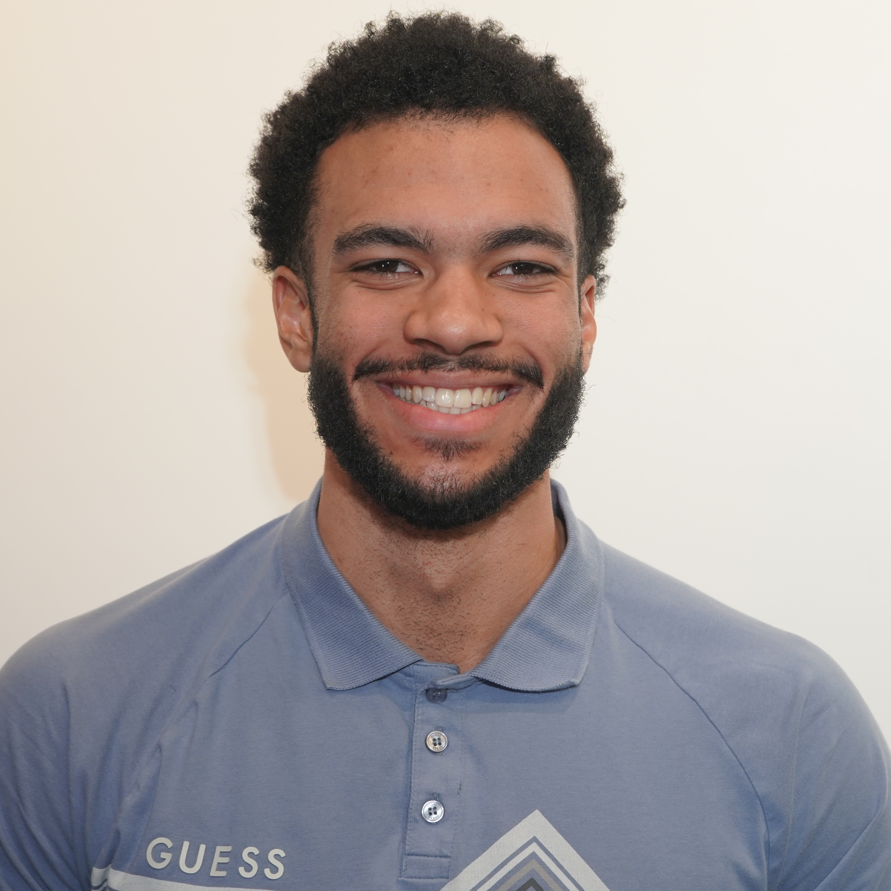
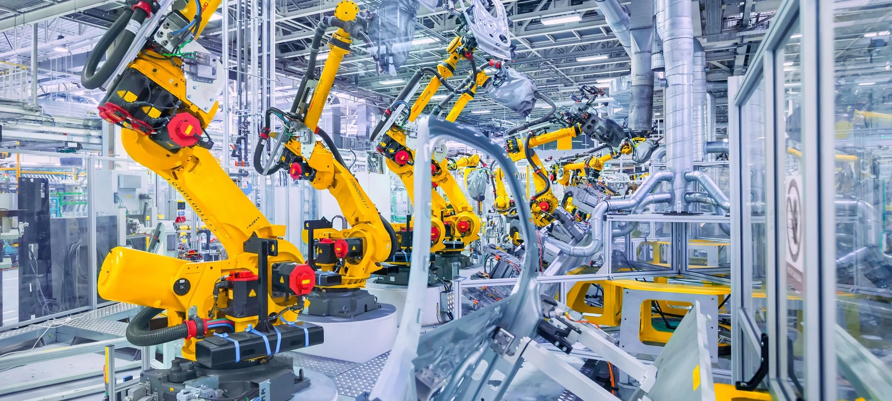
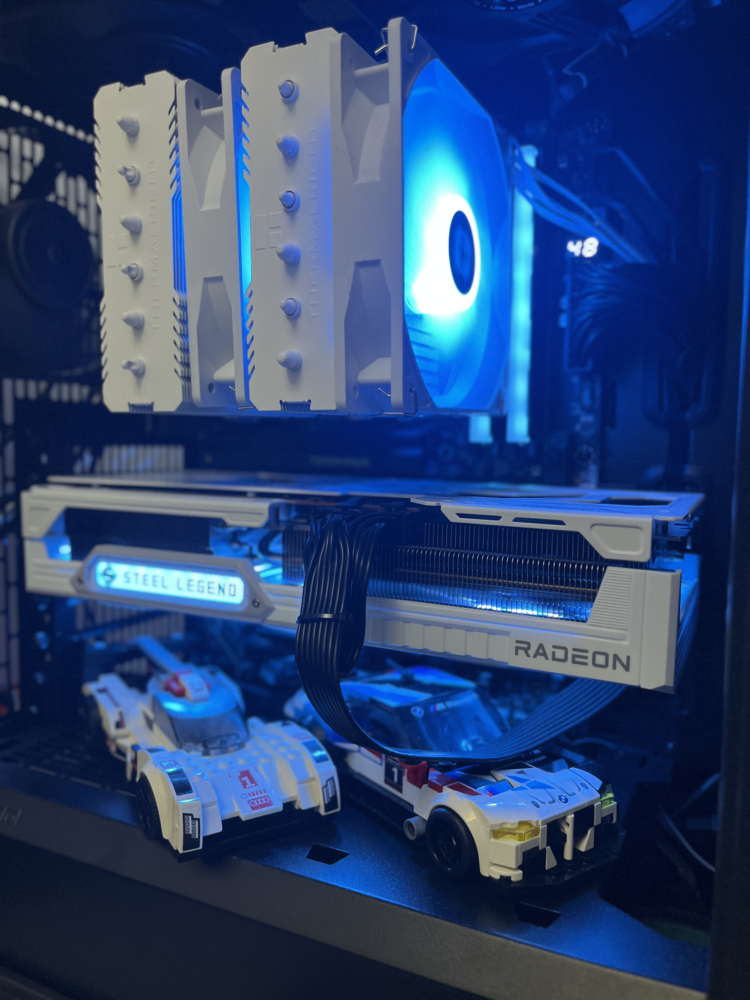
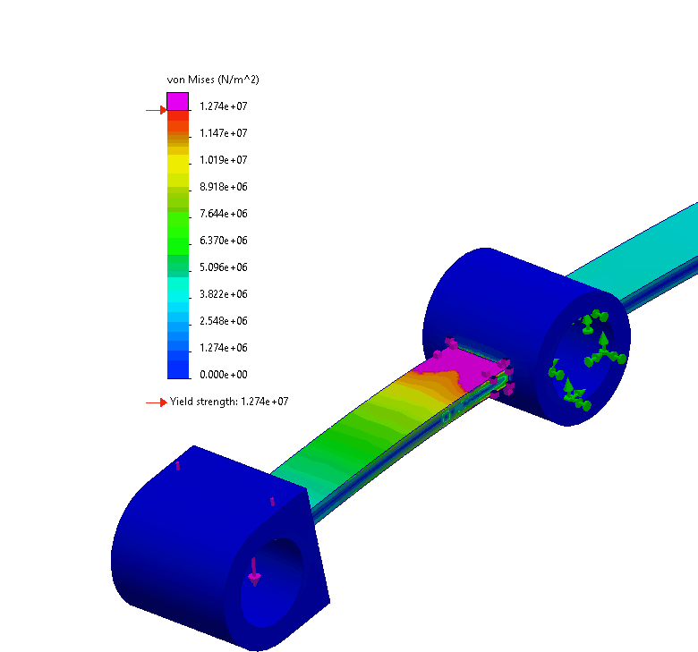
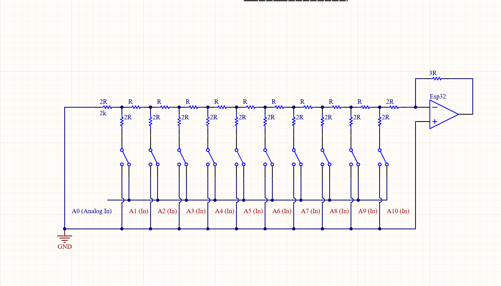
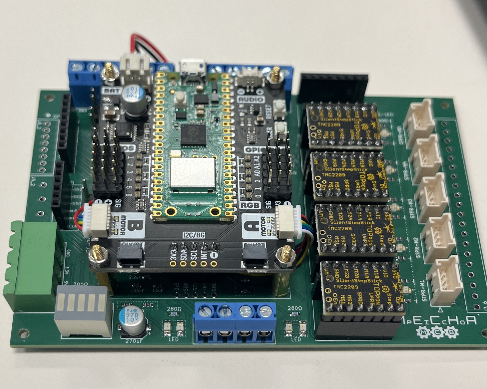
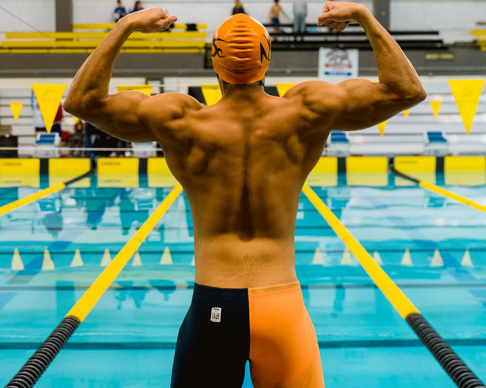
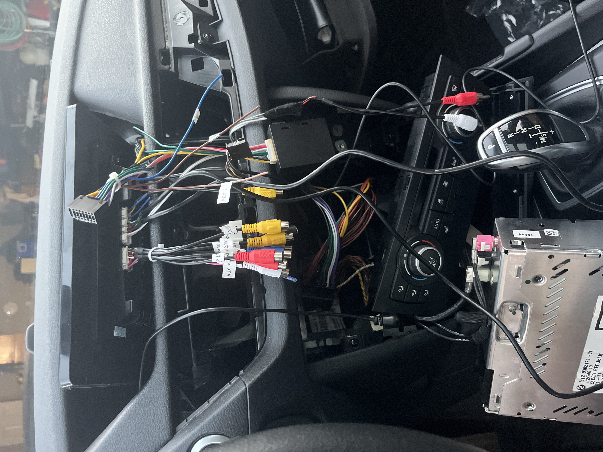
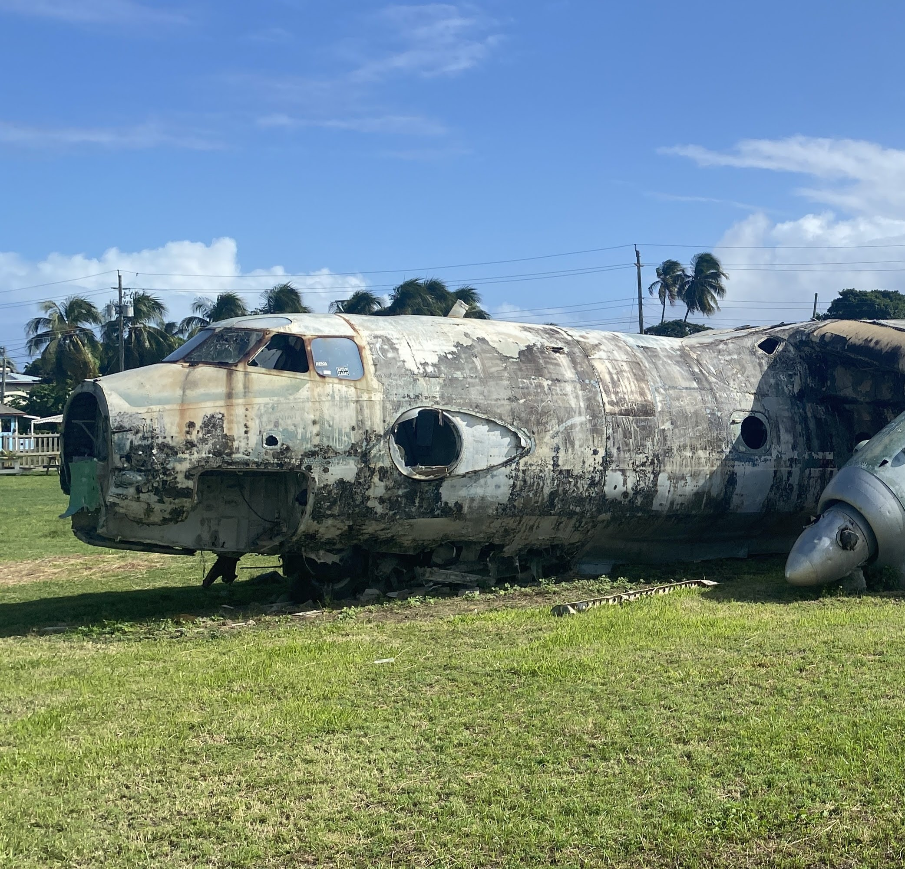

Keiron Street
Mechatronics & Robotics BSc Co-op Student at the University of Alberta
Seeking a 4 or 8-month co-op position starting May 2026.
Passionate about bridging the gap between mechanical design, electrical hardware, and control systems.

What is Mechatronics?
Mechatronics is the seamless integration of electrical, mechanical, and software engineering. Rather than replacing traditional engineering roles, a mechatronics engineer bridges the critical gaps between these interacting subsystems. With a heavy focus on robotics, automation, and artificial intelligence, mechatronics provides the versatile foundation needed to tackle complex, multi-disciplinary systems.
As a mechatronics engineer, I am trained to view a system holistically. It allows me to perform specialized mechanical or electrical roles while maintaining the big-picture perspective required to unify entire hardware and software ecosystems. I have the versatile toolkit required to adapt to the complex engineering challenges of today.
View Current Course Outline
Why I Chose Mechatronics
My path into engineering started with a natural curiosity for how physical systems fit together. My fascination with technology started early. At 13, a deep curiosity about computer hardware design led me to research and build my first PC. Throughout high school, this evolved into a strong interest in physics, mathematics, and circuitry.
I quickly realized I had equal passion for mechanical design, PCB routing, and software integration. As I entered my first year of engineering, the rapid advancement of AI made one thing clear: robotics is the Street (Get it?) that allows AI to interact with and shape the physical world. I wanted to be at the forefront of solving modern problems, mechatronics was the perfect fit. It allows me to foster all of my early passions without having to compromise or choose just one.

My Goal as a Co-op Student
"I believe the best engineering happens when you get your hands dirty. My primary objective is to move beyond the classroom and into the field, gaining the practical, industrial experience required to maintain and optimize complex systems. I am eager to contribute to a team where I can solve high-stakes technical challenges and learn directly from industry experts who keep operations running safely and efficiently."
Technical Skills Showcase
Visual evidence of CAD, PCB design, and programming logic.

Mechanical Design
Expertise in Fusion 360 and SolidWorks. Capable of performing FEA on structural components.

Electrical/Hardware
Experience with Altium, circuit design, and troubleshooting hardware logic.

Software Integration
Programming ESP32/Raspberry Pi microcontrollers using C++ to bridge hardware and software.
Featured Projects
Warehouse Delivery Robot
Course: MCTR 260 Mechatronics Design
We prototyped an automated warehouse robot using VDI 2206 methodology to unify our mechatronic design. I used Gantt charts and decision matrices to keep the project on schedule and ensure the hardware and software integrated smoothly.
12-bit Digital to Analog Converter
Independent Project
Engineered a 12-bit DAC utilizing an ESP32. Designed the schematic and layout in Altium and wrote the firmware in C++. Refining my approach based on my professor's feedback taught me the value of collaborating to move a project from "good" to "professional."
UAlberta Aero Design Team
Extracurricular
Responsible for designing and simulating structural components using Finite Element Analysis (FEA) to ensure they could withstand real-world flight conditions using Fusion 360 and SolidWorks
High-Yield Wind Turbine Design
Team Lead
I led a team of five to build a turbine that hit the highest power output in our class. It wasn't always easy,we had plenty of technical disagreements along the way. I took charge of the coordination, keeping the team focused and resolving those conflicts so we could deliver a winning design.
Who I Am & Engineering Interests
Beyond the Classroom
When I'm not designing circuits or working on CAD models, I enjoy staying active with bodybuilding and swimming.
Lastly, I'm passionate about German automotive engineering and tuning, which reinforces my practical understanding of mechanical systems and component integration.
I also love to travel and explore new cultures. I'm always eager to try new things.
Core Engineering Interests
- Automation & Manufacturing: Streamlining processes and building robust robotic systems for industrial applications.
- Defense: Applying high-reliability design principles to mission-critical systems.
- Project Management: Leading teams from conceptual design through prototyping and final delivery.

Swimming and Physical Fitness
Two of my longest passions. I've been in the gym for almost 5 years and swimming for 3 years.

CarPlay Install
Routed external power for ambient lighting and retrofitted backup camera to turn on when backup lights are activated.

Grenadian Cold War Relics
Pearls Airport and its two Soviet planes were abandoned following the U.S. invasion in 1983.
Leadership & Coursework
Relevant Coursework
Currently completing Winter Term 4 of the Mechatronics and Robotics program. Core coursework focuses on system dynamics, control theory, and mechatronic design (e.g., MCTR 260).
Team Up Science
Driven by my own positive experience as a program participant in high school, I now lead engineering workshops to inspire the next generation. I specialize in translating introductory robotics into accessible, hands-on projects for non-engineers.
This role has been vital in refining my ability to communicate complex technical theories while developing the interpersonal skills necessary to lead and mentor diverse teams.